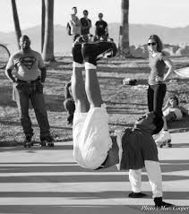

This page highlights the cultural impact of jerk music alongside fresh releases and video links.
The Culture of Jerk Music
Jerk music is not just a sound - it is a culture built on dance, fashion, and community. From colorful skinny jeans and Vans in the 2000s to today's underground internet scenes, jerk has always been about expression and movement. Skaters, dancers, and producers helped shape the identity of the genre, and even as the sound evolved, the culture stayed tied to creativity, individuality, and fun.
Today, jerk thrives through online collectives, viral dance trends, and independent artists who continue to push its boundaries. Explore the latest releases below and revisit the timeline to see how the movement grew.

Dance crews and community jams remain at the heart of jerk culture.
Check Out More
Popular jerk music artists and their standout tracks: